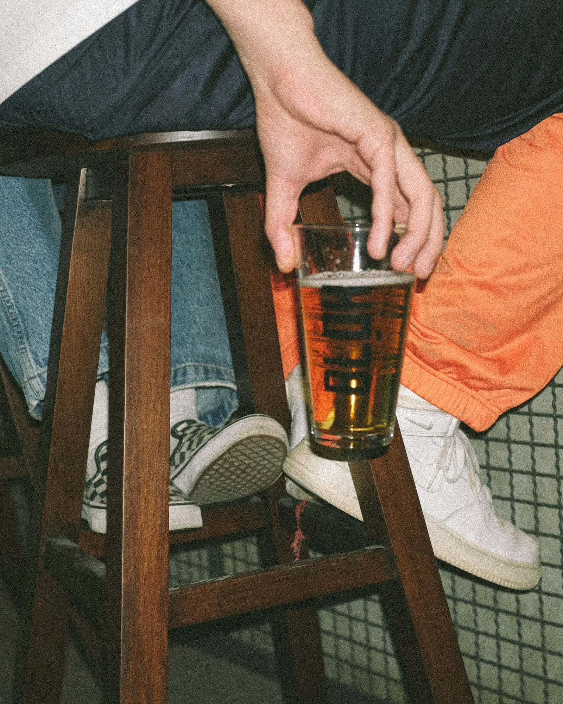

RESEARCH
Does loud music make people drink more?
We went through the studies on music and drinking to see what they found and how far you can trust each one, and here's what that means for the music at your company party.

- Music of any kind seems to speed up drinking compared with silence, at least in lab studies.
- The famous finding that louder music means more drinking comes from one small 2008 study by a research group whose work is in question, and no other group has repeated it in a bar.
- Once a party gets loud enough, guests can only talk to the person right beside them, so it helps to keep the music down while people are meant to be talking.
Maybe you’ve been to a party where the music kept getting louder, and before long everyone was standing at the bar because nobody could hear each other anyway. If you’re hosting a company party, you may have heard that loud music makes people drink faster, and you might be wondering whether that’s true.
Does loud music make you drink more? #
It might, but the evidence is thin. Most of what you’ll read traces back to a 2008 study in two French bars, where 40 men drank with the music either at its usual level or turned up. It reported that the men ordered more beer and finished each glass faster when the music was louder.
There are questions about the research group behind it, though. In March 2023, the journal that published the same group’s earlier 2004 bar study added an “expression of concern” to it, which is a notice warning readers that a paper’s results may not be reliable. Several of the lead author’s other papers were retracted between 2019 and 2025. The 2008 paper itself carries no notice, but no other research group has repeated the experiment in a bar.
In a bigger 2012 study, researchers made 237 visits to 60 bars in four European cities, rating things like how loud each bar was and how drunk the customers were. The louder bars had drunker customers. Once the researchers took other things about those bars into account, like how late it was and how permissive the staff were, the loudness on its own no longer predicted how drunk people were.
Does music make you drink faster? #
In a lab, music of any kind seems to. In a 2013 British study, 45 women each drank one alcoholic drink with slow music, fast music or no music. They finished the drink faster with music than in silence, and the tempo made no difference. The catch is that it was a lab, with about 15 people in each group, and it compared music with silence, so it doesn’t tell us anything about volume.
Music can also change how a drink tastes. In a 2012 lab study of 80 people, drinks tasted sweeter when music was playing. When people had music plus a distracting task, they were worse at telling how strong a drink was.
What happens when guests can't talk? #
A researcher who studies restaurant acoustics has measured how loud it can get before guests stop being able to talk. Two people standing at arm’s length can keep a conversation going with up to about 71 decibels of sound around them. At 77 decibels, a guest can only talk to the person right beside them. One large banquet the same researcher measured, across three halls, ran at 83 to 87 decibels, louder than either of those.
The 2008 study’s authors guessed that when people can’t talk, they drink instead, though we haven’t seen anyone measure it. There’s also a longer read on why restaurants play their music so loud, if you’ve ever wondered.
How loud should the music be at a company party? #
In our experience, the simplest approach is to keep the part of the party where people are meant to talk at a level they can talk across, and to let the dance floor later on be louder on purpose. Live musicians can hear the crowd and adjust from one song to the next. For more on levels, check out our post on how loud background music should be.
If you’re planning a company holiday party, we’re glad to help you pick an act that suits both the talking and the dancing.
Sources
- Guéguen, N., Jacob, C., Le Guellec, H., Morineau, T., and Lourel, M. (2008). Sound level of environmental music and drinking behavior: a field experiment with beer drinkers. Alcoholism: Clinical and Experimental Research. The same group's companion 2004 bar study carries an expression of concern from its journal (March 2023). Read the source
- Hughes, K., Quigg, Z., Bellis, M. A., and others (2012). Drunk and disorganised: relationships between bar characteristics and customer intoxication in European drinking environments. International Journal of Environmental Research and Public Health. Read the source
- Stafford, L. D., and Dodd, H. (2013). Music increases alcohol consumption rate in young females. Experimental and Clinical Psychopharmacology. Read the source
- Stafford, L. D., Fernandes, M., and Agobiani, E. (2012). Effects of noise and distraction on alcohol perception. Food Quality and Preference. Read the source
- Rindel, J. H. (2019). Restaurant acoustics: verbal communication in eating establishments. Acoustics in Practice. Read the source